A Sacred space in an old woodshed
On a river in Mount Hood National Forest, tucked in amongst the cedar and doug firs, sits a small cabin. Nearby, a woodshed molders away, waiting.
I first began visiting the forests of the pacific Northwest 25 years ago, and ever since I have been continually drawn back. Sometimes I come seeking adventure, sometimes quiet, sometimes simply the feeling of awe that comes walking among the big trees.
Sometime later, I discovered the ritual and experience of sauna. I began seeking out sauna everywhere I went. Around each, I invariably found a community willing to step outside time together, to drop into the awareness of their bodies. With this awareness came also a heightened connection to the natural world, whether it was the fjord in the middle of Oslo, a village beach in Ireland, or deep in the woods of British Columbia. It was only a matter of time before I began dreaming of creating such a space back home.
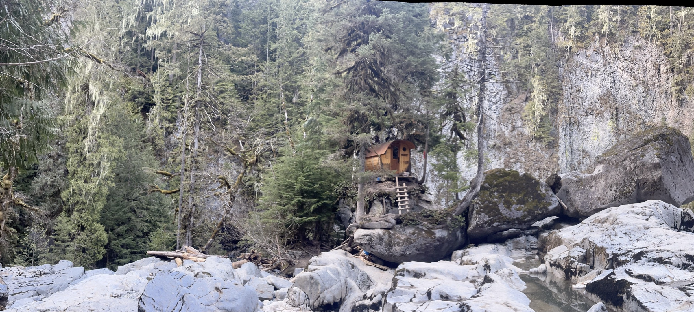
The project was a DIY build, done slowly over the course of a year. It was done mostly alone, offering solitude and an outlet for the strong feelings accompanying a difficult chapter of my life. However, it was conceived from the begining as a space for building and strengthening community. Many loved ones contributed. Family members helped swing hammers and operate unfamiliar saws. A close friend and veteran sauna-builder offered wisdom and encouragement. Another friend created a beautiful heat shield that became a central element of the design. A neighbor milled the cedar he felled nearby.
When I told people what I was up to, more than a few wanted to know more. Some were just curious, but many harbor similar dreams. It is my hope that this journal will help inspire and inform such dreamers. Create the space, gather the people, light the fire.


Design

The design of the sauna started with its most central elements: the hearth, and the view of the forest and nearby river. I wanted the entire focus of the room to be on these, which meant determining where to place the windows, placing the stove in front of them and then working backwards from there.
The existing structure is 10' x 12'. I divided this space into the hot room, a small changing area, and a storage space. The hot room is approximately 6' x 9'10", with 7'6" ceilings (8' ceilings would have been nice, if they had fit).
Stove selection
IKI stoves are renowned for their löyly thanks to their unique helical chimney and generous rock capacity. Another advantage of all that rock is that it reduces required fire clearance, allowing the stove to be tucked tight into the window corner, right where I wanted it. However, the loaded stove weighs almost a thousand pounds, which added some complexity to the structural work.
Given the mountain setting and my preference for using a traditional floor design (see below), I chose to upsize my stove. An Iki Mini might have sufficed, but I chose the full-size Iki Original Plus. I'm glad I did. It's an absolute joy to have a stove that is always capable of providing abundant löyly and heat!
Benches
I orginally designed benches in an L-shaped layout to maximize seating. However, during the build process, I decided to skip the L benches in favor of a simple set of benches. I wasn't convinced adding the L would add much seating, and in my use so far this has been true: the sauna can comfortably seat 4 or 5 people on the 6' upper and lower benches. I can always add L benches later, if they are wanted.
Originally I planned the upper bench to be hung at 42" and the lower at 22". Here again, I knew these might change and planned to determine the final heights experimentally once the sauna was opperable. Using temporary benches for the first few saunas, I determined that the best balance of heat, löyly and comfort put the upper bench at 40" and the bottom at 24". I built a wide, 8" stool to act as a footstool and step up to the lower bench.
The benches are 24" deep, with the lower bench tucked about 4" under the upper. The lower bench can slide under the upper when cleaning the sauna or when I want a bit more room


Supporting a ton of rocks
Before building the sauna, the existing interior of the outbuilding had to be stripped down to the joists and studs. The floor was not structurally sound and needed a lot of work. It also needed to be reinforced to support the stove, which weighs nearly 1,000 lbs with a full load of stones!
Demolition
I ripped out all the existing floor and then inspected every structural member for rot, especially at the sill plate and anywhere near the ground.
Leveling the joists
The floor was sagging badly due to undersized joists. I jacked everything back to level and added a beam to break up the 12' unsupported span. I also sistered the joists in the sauna area.
Supporting the stove
I added joists to half the joist spacing under the stove location. I supported these with a new beam and 3 new piers, one on each corner.


Defining the room
I divided the shed into three sections: hot room, changing room and storage area. I dropped the ceilings to 7'6" in both the hot room and changing room, and framed in the support box for the future chimney. This latter part ended up being tricky.
Framing partition walls
I built the walls on the new floor and then stood them up. I framed in the door plus an opening for ventilation. Windows came later
Installing blocking and nailers
I added horizontal blocking between studs for the bench hangers. This blocking serves two purposes: it stiffens the walls, and it provides more places to screw the bench hangers into. I changed my mind several times about the exact bench placement and height, so I was glad I added some extra blocking! I added corner studs to provide a nailing surface for the paneling.
Dropping the ceiling
I nailed 2x6 joists to the rafters to create a dropped ceiling. Again, every corner needs a board to nail the paneling!
At this stage, I didn't know exactly where the stove would sit. That depended on complex heat shield and wall designs I hadn't finalized yet, plus the fire clearances requirements for my chimney and stove. I also needed to select the exact components of my chimney system (this guide was helpful for that).
I didn't place the stove until later on in the project, when my ceiling was almost finsihed. I then discovered that one of my ceiling joists was in the way of the path for the stove pipe. I would have avoided a bunch of work if I had nailed down the chimney placement earlier! Of course, I could have cheated with some bends in the pipe, but a straight run looks and drafts better.
Framing the ceiling support box
I made a full-size template of the stove with the exact dimensions, including the furnace and chimney pipe outlet. I placed it on the floor in the planned position, measured clearances off it, then dropped a plumb bob from the ceiling to find the exact center of the pipe. Now I knew where the pipe needed to pass through.
Because the attic space was short, I determined the chimney would drop through the roof and be supported by a ceiling support box. This box carries the full weight of the chimney and maintains the required clearance to combustibles.
I framed a box in the ceiling slightly larger than the support box, centered on the pipe location I'd determined with the plumb bob. This is where doing it during the framing phase would have saved me. I ended up having to move a joist that was in the way.


Electrical
Before insulation, I installed circuits for the sauna wall light, a changing room light and outlet, outdoor lighting, and storage area power. I also installed a box for under-bench lighting, but I scrapped that idea later on.
Running wire
I drilled through the middle of studs with a 3/4" bit, all at the same height for a clean run. I used 12/2 romex, with nail plates over every wire run through studs to protect wires from future nails and screws.
Installing boxes
I left 6" of wire in front of each box and stapled the cable within 6" of every box. One wire per slot in the back of each box, with the ground wire attached to the grounding screw on the metal boxes. I used metal boxes inside the hot room.


A simple, classic design
Unlike other saunas, internal wood-fired saunas constantly bring in fresh outside air to feed the fire. This means you need to provide plenty of ventilation, located low in your sauna. Because of this, traditional saunas often have uninsulated floors built from intentionally gapped deck boards. This design offers a simple solution to both ventilation and drainage.
Installing hardware cloth
To keep rodents out, I stapled 1/4" galvanized hardware cloth between joists on the underside before laying any decking.
Planning the layout
I did the math to determine how many boards I needed and roughly how much I'd need to trim the last board. I started at the front of the sauna so the trimmed board would be hidden under the benches.
Installing the boards
I used 1x4 cedar decking. To conceal the fasteners, I used the Marksman Pro system, which has the added benefit of ensuring consistent 3/16" spacing. The first board had to be face-screwed, but those were hidden by the wall assembly later.


A complex, classic(ish) design
The window corner is the focal point of the entire sauna, and also a bit of a sticky wicket. I wanted the windows to be positioned directly behind the stove. This meant they needed to be engineered to withstand intense heat and the occassional splash of water. However, to meet the historic preservation standards of the National Forest, they also needed to be wood-framed and classicly styled. I could not find a window product that meets all of these requirements.
What I ended up doing was using two windows in each opening: a sealed double-wall unit from One Day Glass on the inside, and a simple, traditional barn sash window on the outside. A "hot window" and a "cold window", if you will. This made the install more complex but was far cheaper than having someone make custom windows.
Take care when selecting windows for your sauna. Most modern windows have components that will off-gas at sauna temperatures. Avoid vinyl and other plastics. Look for windows that are sealed using high-temperature silicone. Tempered glass is also a good idea, particularly if the window is close to your heat source.
Installation
Framing the rough opening
Before I started, I spent a lot of time making sure the windows would be in just right place to enjoy the view from the upper bench. I used painters tape to get the placement approximately right and then cut a smaller hole to verify before fully committing.
Before cutting into the studs, I built a temporary support for the eave-side wall. Then I framed in the windows and cut away the existing sheathing and siding. I installed some shingles on the sill plate to create a slope for drainage.
Flashing the rough opening
I applied flashing tape around the entire rough opening and about halfway into the framing. This material isn't rated for heat and I didn't want it to go beyond my outer window.
Installing the jambs
I build the jambs and sill from 1x6 doug fir. I sealed everything on the outside with exterior sealant
Installing exterior stops
I cut 1" × 1/2" exterior stops and primed/painted all sides before installation, cutting a small weep hole for drainage. I caulked each piece (leaving a gap for the weep hole) and then brad-nailed in place.
Installing the cold window
I placed the sash in the RO and wedged interior stops against the glass with two beads of sealant, leaving a gap on the outer bead for drainage. This time I used a high-temperature silicone sealant. It's important not to use standard caulk anywhere that gets hot!
Because I knew the interior stops for the windows would interact with my paneling, heat shield and trim, I waited until my paneling and heat shield were installed before installing the hot window.
Installing the hot window
I set a bead of silicone on the interior stops holding the cold window and then put the hot window in place. I then used more silicone to fully seal the gap around the window – I didn't want any steam getting in between my two windows! Finally I cut another set of stops for the inside. I ripped these so their edges would be flush with the paneling, making a nice clean interface with the trim.
Installing the trim
The trim stops at the heat shield, so I had to come back and install it later. My stops were not perfectly flush with the paneling, so I had to plane the backs a bit to make everything sit tight. Then I nailed them in place with 1/4" reveal all around.


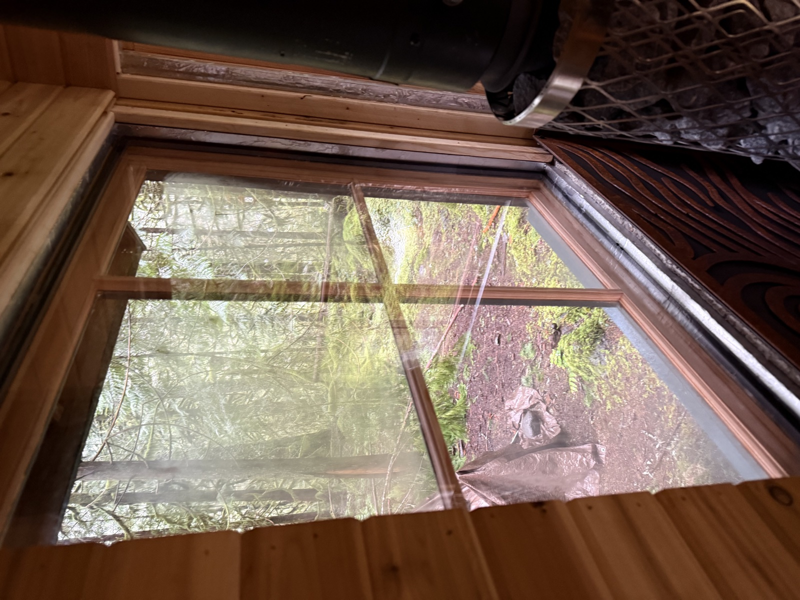
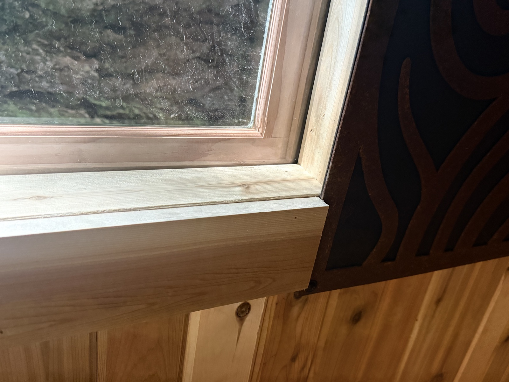
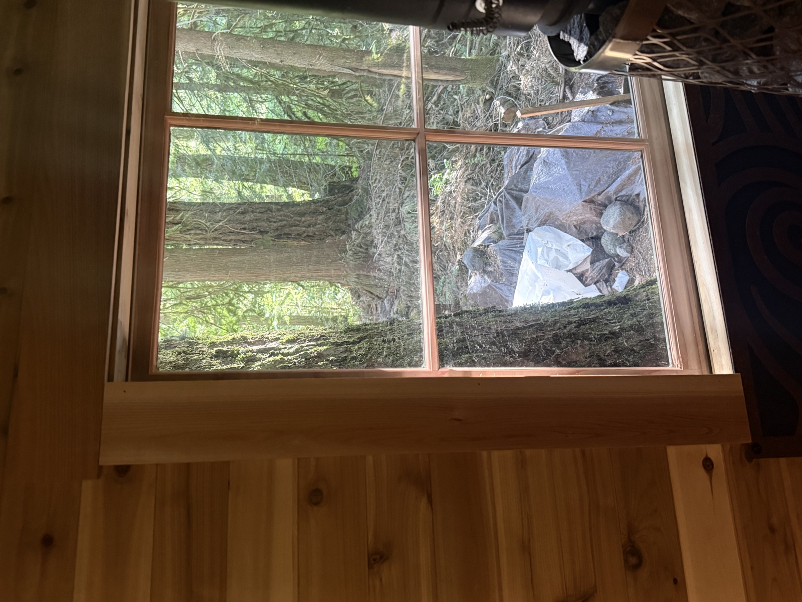
Retaining the heat
Although I favored a traditional design for the floor, the walls and ceiling are another matter. Uninsulated saunas can work, but they take longer to heat up and more feeding to keep hot. In addition, because there is no vapor barrier, they work best when your walls are a single layer where moisture cannot be trapped in the walls. For a stick-framed struture like my shed, it's best to use modern construction methods when it comes to insulation!
Insulation
I used rockwool insulation throughout. It's fire-resistant, moisture-tolerant, and handles extreme sauna temperatures without degrading. I installed R-15 (3-1/2" thick) in the walls and R-23 (5-1/2" thick) for the ceiling. Standard fiberglass insulation has lower R-values for a given thickness and is not rated for the high temperatures and moisture of a sauna.
Insulating the walls
I pressed R-15 batts into each stud bay, being careful not to compress them. I cut each piece to fit snugly around electrical boxes, blocking, and window framing. I stuffed small pieces of Rockwool around door and window rough openings and other gaps. Some use spray foam for gaps, but rodents love building their nests in this stuff and I avoid it at all costs.
Installing ceiling insulation
The R-23 batts went overhead, friction-fit between joists. Rockwool fibers is a lot more pleasant to work with than fiberglass, but glasses, gloves and a mask are still a good idea. Since most heat loss occurs through the ceiling, I laid extra R-23 batts on top of the joists in the attic area.


Vapor barrier
I took detailed photos of all stud and blocking locations at this point. I knew I'd need to find them later when installing bench hangers, trim, and accessories.
The vapor barrier reflects radiant heat back into the room and prevents moisture from reaching the insulation and framing. I was careful to create a continuous barrier, sealing any gap where moisture might penetrate and cause mold or rot. It was very helpful to have an extra set of hands for this process!
First run: horizontal around the room
We rolled a 4' wide strip of aluminum foil horizontally around the entire room, shiny side facing in, starting 1/2" from the door rough opening (the reveal gives the tape a landing spot). We stapled at every stud and used a scrap piece of paneling to crease the foil tight into corners.
Second run: up, over, and down
We ran the second pass vertically: up the wall, across the ceiling, and down the opposite wall, overlapping the first run by at least 6". We then repeated this process to cover the rest of the walls and ceiling. We rolled right over the windows.
Cutting & taping
We cut X-shapes at window openings, folded the flaps to the studs, and taped the seam with foil tape. We carefully taped all the overlaps in the barrier, and all the little cuts and mistakes we made installing it. The vapor barrier goes behind electrical boxes! We sealed around wires and box edges with more tape.


Finishing the walls
Mind the gap
Installing furring strips over the vapor barrier is not a critical component of sauna construction, but they are a good idea unless space is extremely limited. Furring creates an air gap, allowing moisture that condenses on the vapor barrier to run down the wall instead of eventually rotting the wood paneling. They also help eliminate irregularities in the framing to provide an even nailing surface for the cedar paneling. Finally, air gaps are insulators.
Installing wall strapping
I started with a single horizontal strip along the top of each wall, and then placed vertical furring strips on top of the wall studs. I nailed these in place with 2" stainless steel brads.
Installing ceiling strapping
I ran furring strips parallel to the ceiling joists. I used brads here too, but I reinforced them with a bunch of stainless steel screws. Here again, every corner needs something to nail the paneling into!
Adding blocking strapping
I added short pieces of strapping at bench blocking locations, around window and door openings, and anywhere trim or accessories would attach. By this point I knew more or less where my benches were going, so I avoided running strapping all the way across my blocking (since that would break up the drainage path in each stud bay).
After installing the strapping, I sprayed black high-temperature stove paint over the corners in my ceiling. I planned to have a small gap for air flow between the wall and ceiling, and didn't want the shiny foil glaring out in the corners.


Installing the heat shield backer
Before installing the paneling, I screwed 1/2" Durock (cement board) over the vapor barrier into studs in the entire stove corner, from floor to window height. There was no need to skim or paint this since it would all be covered by the heat shield.

The fun part
I used 1" Western Red Cedar T&G for my build. To save money (cedar is dear these days), I used about 75% TK (tight knot) grade, with a bit of clear cedar for the backrest areas behind the benches (knots can create hot spots that can be quite uncomfortable to sit against). I used 2" 18-gauge stainless steel brad nails.
This was one of the most satisfying parts of building the sauna. I enjoyed taking it slowly, obsessing over the selection of each board to create interesting patterns and working carefully so that there are no gaps that need to be covered with trim.
As I installed the paneling, I made pencil markings to indicate where the bench blocking was behind the wall.
Backs and sides first
Before starting a surface, I calculated my coverage so that I could rip first board width roughly the same as the last board. No one wants a wee skinny board at the end.
I started the walls on the window side wall, then the back walls, then the door wall last. Each board butts into the last, hiding the cut end, and the cut ends of the boards on the door wall are hidden under door trim. I worked bottom-up, 3-4 courses at a time around the entire room to keep board lines (and patterns!) aligned. When I got to the top, I left enough room for the ceiling boards plus a small gap. The last board is face-nailed. I also left very last board on the door side off to make it easier to sneak in the ceiling boards.
Window wall next
There is no universal rule to which surface to do first or last, and a lot depends on the space. In my case, I left this wall last because it had the most room to cheat: I could hide ends under both the door trim and window/heat shield. It also had a lot of short runs where I could use up leftovers. Again I left a couple boards off at the top until after the ceiling.
Ceiling last
The ceiling was last, but because I left off a few wall boards it was easy since I could hide the ends under the top course of the walls (yes I could have just done the ceiling first, but I wanted to be able to pick all the best boards for the walls!). I measured the ceiling at both ends every 3-5 boards to prevent "fanning".
I stopped the ceiling boards when I reached the stove pipe. Aftert it was installed (see next section), I finished up the ceiling and then snuck in those last wall boards. I went in the same wall order as before, ending at the front wall. This very last board was a full length course, and getting it in under the ceiling was tricky! I ended up needing to do several gradual cuts on the table saw with a slight bevel to get it to finally pop in.


Lighting
After considering under bench lighting and a range of other options, I chose a simple lighting system. My preference is to use no lights at all. It is wonderful to sauna as the evening light fades, until the only light is the flickering of the firelight. When a bit more light is needed, a simple dimmable lamp on the wall provides plenty. The wall light is softened by a beautiful cedar covering.

The heart of the sauna
At last it was almost time to install the stove, which had now been sitting in my dining room for months. But first…
One fall, I walked down to the river and the first thing I saw was a dead salmon, staring back at me. It was lodged on a rock, its mouth agape and body torn. It had completely worn itself out. Then, in a quiet part of the river, I spotted a large, dancing shadow. Another salmon, catching his breath. As I watched, he resumed his swim up the river. The river was shallow here, and much of the fish's body was above the surface. I could see him clearly now, his body was taterred and his movements deliberate. He looked unfathomably tired, and not the least bit deterred.
In that moment, this fish's will spoke very deeply to me. I thought about my own struggles, which were as nothing to his. And yet for him, nothing was wrong. He was doing exactly what he was supposed to do. I imagined my own journey up river. The struggles remained, but felt lighter. There was no agony, I was simply on my path.
In my mind, I return to this fish often. He is forever making his way up the river.
Fabricating the heat shield
Given the central role of the stove corner, I knew I wanted something special for the heat shield. I also wanted to reduce the required clearance as far as possible. A friend of mine runs a metal fabrication business, so I commisioned him to design and fabricate a custom heat shield. Somehow, he managed to capture my feelings perfectly. The river and salmon in the design speak to me just as they did in the original encounter.
The system consists of three pieces - a sheet metal panel mounted with a 1" air gap in front of the cement board, the decorative layer mounted in front of it, and a steel plate for floor protection.


Installing the Chimney
I built a quick, hot fire in the stove outside the sauna before installing it, to burn off any residue from the manufacturing process.
Installing the stove was a complicated process I wish I had figured out earlier (see the section above on Chimney Placement). Because I was behind schedule at this point, I hired a technician to do the actual chimney install. There are many good guides out there for those who want to DIY.
After the chimney was installed, I finally installed those last few ceiling and wall boards.


Ventilation
Besides staring deeply into the flames, one of my favorite things about a wood-fired sauna is that it brings a lot of air movement into the room. This creates an entirely different quality of heat. It feels like the heat washes over you. It has none of that stifling, stuffy feel common in electric saunas without proper ventilation.
The floor system provides plenty of fresh air for the stove, but it needs a place to go. To ensure air circulation across the entire sauna room, I placed a 6x8" outtake vent high on the back wall, opposite the stove.
Sealing the opening
I had already framed the opening with short headers. I sealed the entire opening with aluminum tape, and tacked a screen on the interior side to keep rodents out.
Protecting the vent
I made an angled rain hood out of some scraps of cedar. I mounted this on the exterior and sealed it with exterior caulk.
Controling air flow
I made a cedar vent cover from more scraps. It slides to allow adjusting airflow during use. Unlike using an electric sauna, I often keep the vent partially open during use. Counterintuitively, it often feels hotter this way!


A custom door
Cedar sauna doors cost well over $1,000. I'd never built a door, but determined I could build one for next to nothing, using leftover cedar scraps and a $35 double-wall window from One Day Glass. It was a lengthy process, but the result fits the space better than anything I could buy.
Building
The door consists of 1x2" cedar framing with lapped joints, covered on both sides by scrap T&G. I put in a vapor barrier on the hot room side, and insulated the frame cavities.
Cutting lap joints
I used a router to cut my laps, routing opposite stiles/rails together in pairs to ensure consistency.
Assembling the frame
Cedar absorbs a lot of glue. I applied a thin sealer coat of glue, waited 60 seconds for absorption, then applied normal glue and clamped.
Paneling the hot room side
Before installing the paneling I added a vapor barrier to the hot room side and taped off all the edges. Then I paneled the over this, taking extra care to match my pieces visually with those on the adjacent wall. I cut my paneling a bit long and lined up the edges on the hinge side with the ends hanging over a bit on the latch side. I planned to trim these off when I cut the bevel on the door.
Flipping and repeating
I flipped the door over and filled the frame cavities with leftover rockwool. Then I paneled over the other side and installed the window!


Hanging
Hanging a 75lb door could have been a struggle, but with some careful prep it went smoothly. Working with a friend for this part was very helpful.
I nearly put the hinge mortise on the wrong side of the door jamb. Triple-check and mark it clearly before routing!
Beveling door edges & mortising hinges
We fed the entire door through the table saw to cut a 2-3° bevel on the latch side of the door, with the shorter side on the stop side so the leading edge clears. We then mortised and installed the hinges into the door, using 2" brass hinge screws. Because the door was so thick, we placed the hinges plates all the way into the side where the screws would bite into the frame. This meant we needed to do a bit of creative sanding on the surface of the door to accomidate the hinge barrels.
Building a jig for the jamb
We made a jig from 1x2 stock, cut to the height of the door plus 1/8" for the top reveal and 1/2" for the bottom. We lined up the jig to 1/8 above the top of the door and attached the hinges.
Cutting the jamb
First we cut the jambs to length, again including the door height plus a 1/8 reveal and a gap, but this time measuring off the actual floor. The floor sloped slightly, so we made the longer side jamb taller so the head jamb would sit level. We also added the stock width to the side jambs since I planned to use a lap joint. Then we routed a shallow lap joint, just enough to keep the visible joint tight.
Mortising & ripping the jamb
We clamped the jig to the side jamb (lined up with with the bottom of the lap joint) and transfered the hinge locations with a utility knife. We used a combination square to transfer the depth of the hinge plates from the door, then routed the mortises on the jamb. Finally, we ripped jamb stock to width, accounting for the full wall width. I was glad we did this last, as it allowed us to tweak the depth of the hinge mortises after they were cut.
Assembling & installing
We attached the hinge-side jamb to the door, then assembled the frame on a table using shims to provide 1/8" gap all around. Then we stood the assembly up in the opening and shimmed the top corners to hold it in place. We then opened the door and shimmed the hinge jamb to plumb. We then screwed the hinges into the jamb, filling any gaps behind the hinges with shims and using long hinge screws to penetrate into the framing (this is a heavy door!).
Finally, we closed the door and shimmed the latch jamb to ensure a consistent 1/8" gap , securing with long trim-head screws.
Add stops and trim
Later on I came back through to finish the job. I ripped stops from 3/4" material to width so that with the door closed they were flush with the jamb on the inside and just resting against the door. I worked one side at a time, starting with the latch side of the door. I measured, ripped and nailed each stop in place before proceeding to the next side.
Now that my stops were in place, I cut my casing from 4x3/4" stock. I started with the sides, then the top. On the inside of the sauna, the trim covers both the jamb and about half the stop, leaving a neat 3/8" reveal all around.
Finally, I took some leftover stock and planed it down to 1/2" for the door's window trim. I used mitered cuts for this bit.


.jpeg)
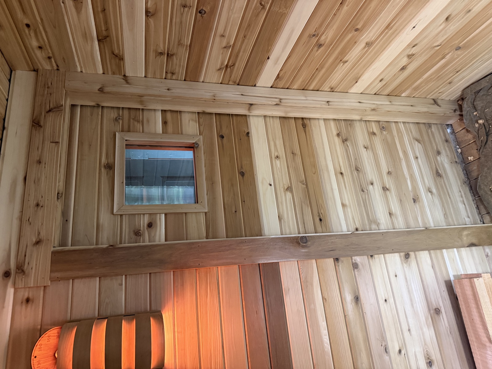
Measure once… then sauna
Building the benches ended up being a somewhat lengthy process. However, this gave me plenty of time to think about the design of my benches – an important topic! Best of all, I got to do most of that thinking in the sauna.
Milling
Lumber for the benches was locally sourced western red cedar, felled by a neighbor, who had already air-dried for two years before we milled it. We milled true 2x4s for the bench stock, carefully selecting clear sections to ensure there are no knots on the seating surface. The stock was still ~20% moisture content after milling, but I figured I could dry them the rest of the way in the sauna!


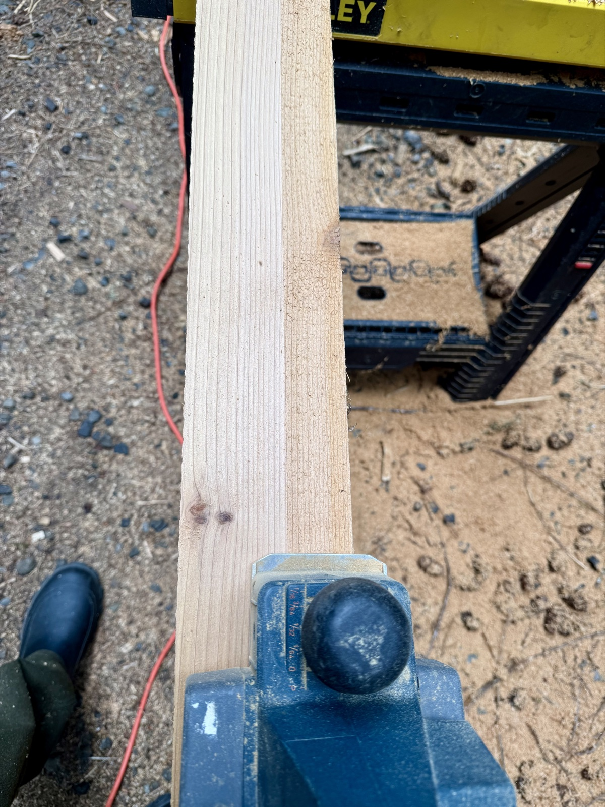
Bench layout
At this point my lumber was drying and I still wasn't sure about the exact height and placement for my benches. And I badly wanted to give this sauna a test run! I cut my milled lumber 1/4" shorter than the room width. I laid these 2x4s across scrap lumber that I had stacked to the right heights. I now had usable benches, and a drying rack for my lumber!
After several test runs, I settled on the upper bench at 40" high, the lower bench at 24", and a foot stool at 8".

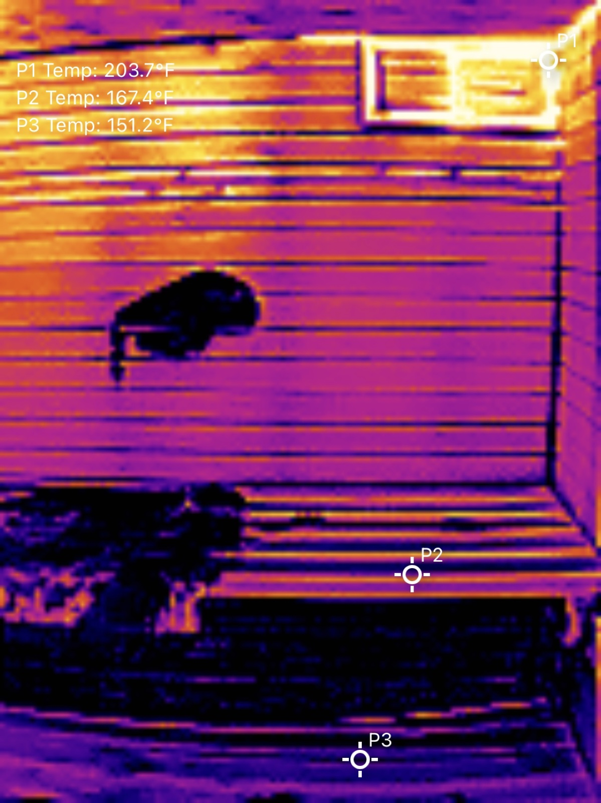
Bench construction
After several sauna firings and a few weeks of waiting, my lumber was finally dry enough to construct my benches. I based the bench design on this guide, but with several modifications.
Assembling bench frames
The front and back of my bench frames consisted of true 2x4s on end. I then cut 6 20" wide cross pieces to support the planks and ripped them to 2" so the planks would be flush with the top of my frame. These cross pieces were glued and screwed into place, using pocket screws on the front so no fasteners would be visible (or touchable) once installed. I doubled up the cross pieces at the ends of my benches to match my double-wide hangers.
Adding the planks
The planks need to be fastened from below, which made getting them into place a bit tricky. I first laid them on with everything face-up, using shims to maintain consistent gaps between the boards. I then attempted to flip the entire thing over without the planks falling out (I failed). Perhaps a strap would have made it work. After laying out the planks again, I fastened everything from below using 3" wood screws.
Installing
Because I deducted 1/4" from the length of my benches, they slid in readily but without too much play.
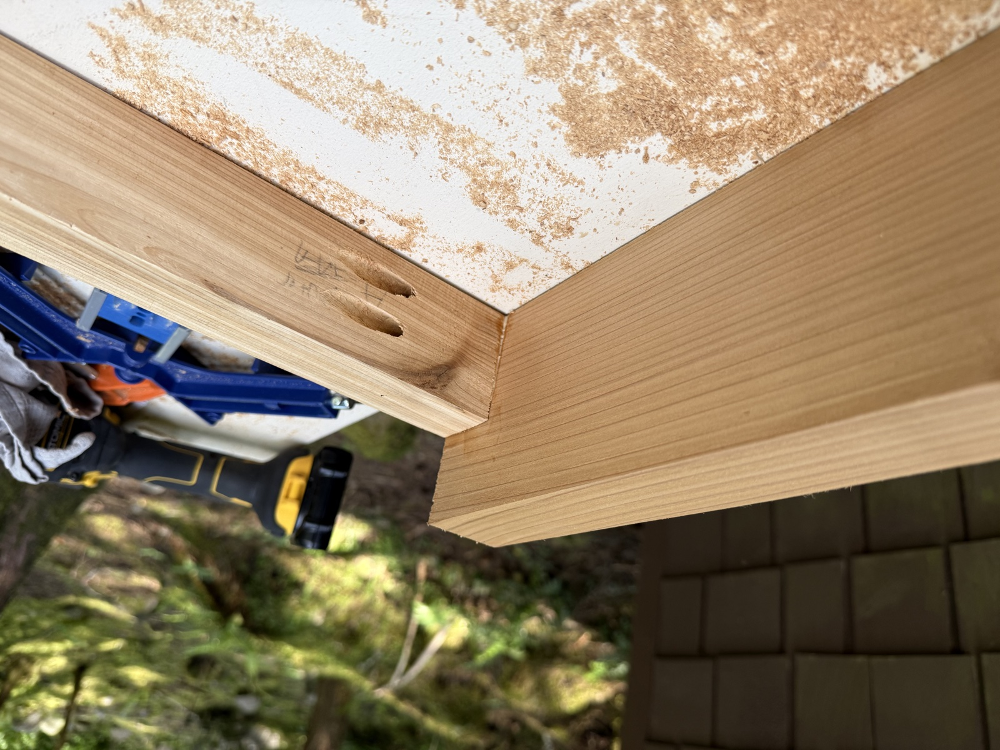
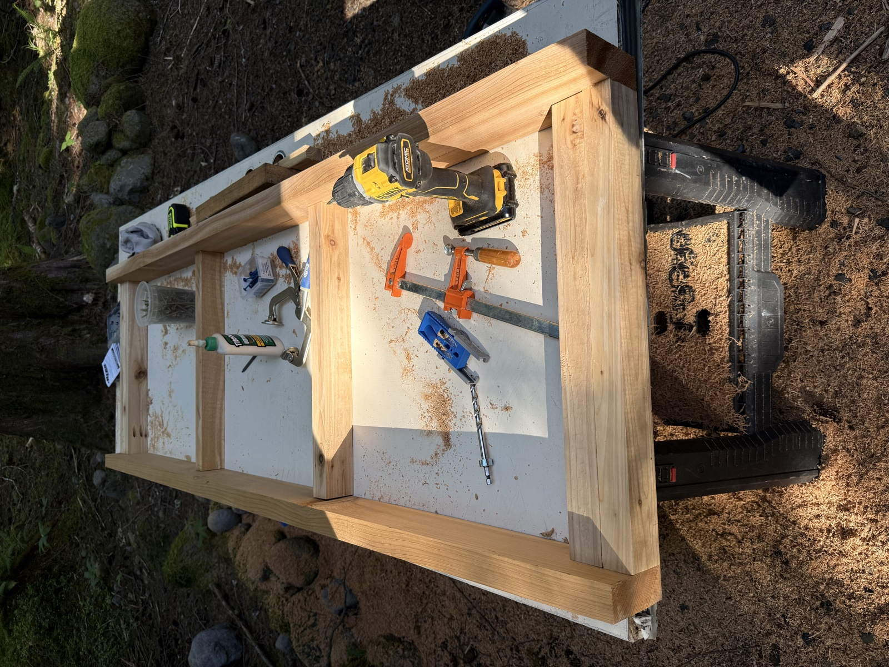
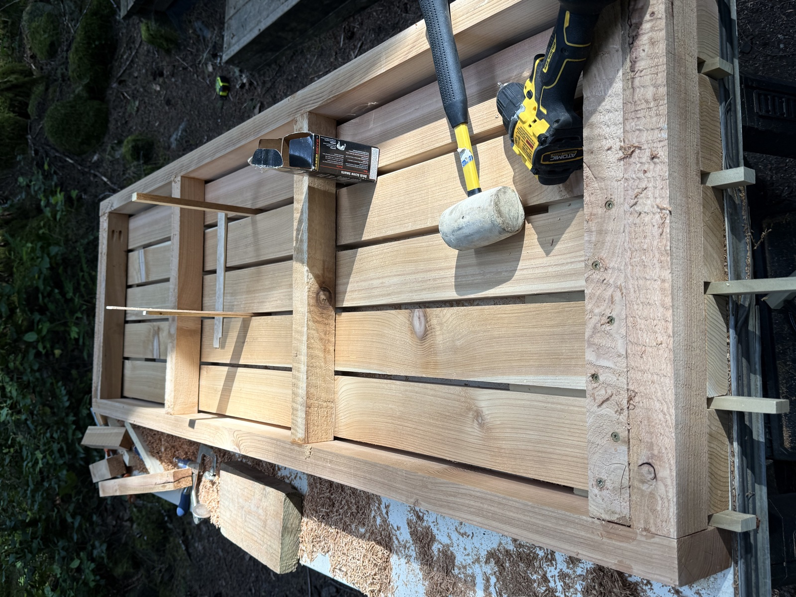
Bench hangers
I used floating bench hangers to avoid the clutter of having legs below my benches. They look great and make it much easier to sweep out the sauna! Both benches simply rest on the hangers. I was worried they might not be secure without fastening them into place, but they seem plenty stable as-is. Perhaps I will come up with some sort of latch system I can undo when moving them. The lower hanger runs all the way back on the wall, so the bottom bench can be easily slid back and out of the way.
Setting heights
I subtracted 4" (true 2x4 width) from the bench height for hanger positions, then carefully marked my anchor locations. I used 5" structural screws (1.5" hanger + 1 3/8" wall assembly + >=1.5" stud penetration), following the the screw pattern suggested by the manufacturer.
Installing side bars
I cut two side bars, the left one at 24" and right one the full length of the L bench in case I decide to add it later. I cut decorative 45° bevels on the exposed ends of all side bar pieces. Then I fastened them into the side walls, checking level front to back and side-to-side.
Attaching the backwall hanger
I fastened the backwall hanger into studs following the same screw pattern, with additional 3" screws underneath and on the face at 45° to lock the backwall piece into each side piece.
Installing side support pieces
For additional support at the bench ends, I cut two more side pieces at 22.5" with matching 45° bevels. These were glued and fastened onto the existing side pieces with 3" screws.

A long-awaited moment
After a year of construction (and many more of dreaming and scheming), this was the moment the whole thing was building towards! But first, I needed to move 800 pounds of rocks…Placing the stones
With the stove installed and the prototype benches in place, it was time to load up the rocks. Despite my excitement, I took care, placing each stone carefully to cover the furnace and maintain air flow.


The light was fading as I fed the fire and the sauna slowly got up to temperature. Just as it reached 190° a soft rain began to fall. Climbing up onto the benches for my first sweat, I was overwhelmed by my emotions: pride at what I'd built, gratitude for what I had, and even a bit of sadness for a long-dreamt-of project finally coming to its close. Plunging into the wintery river, I was already dreaming of the many moments others and I would surely share in this special space. As excited as I was to share it, it felt right to be alone and let these emotions wash over me with the icy waters and the gentle heat of the sauna.
.jpeg)

The finnished product
WIP. I need to get some better photos done!
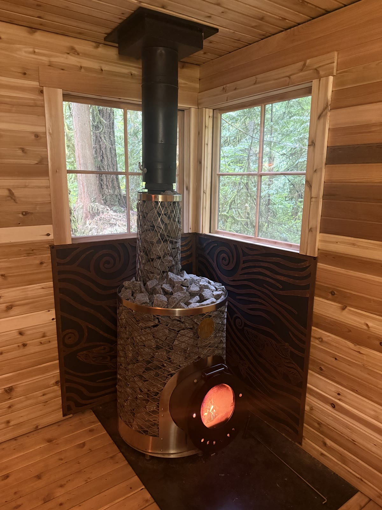
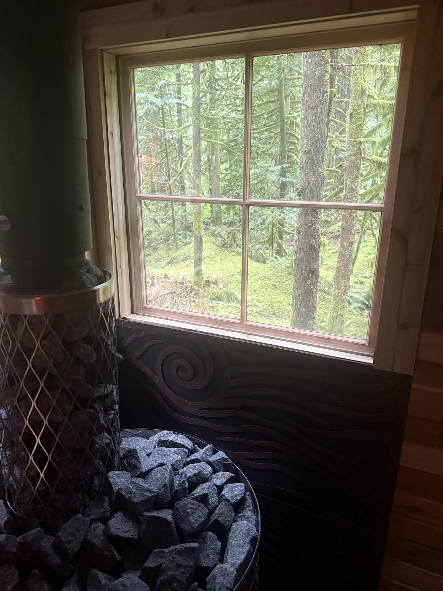
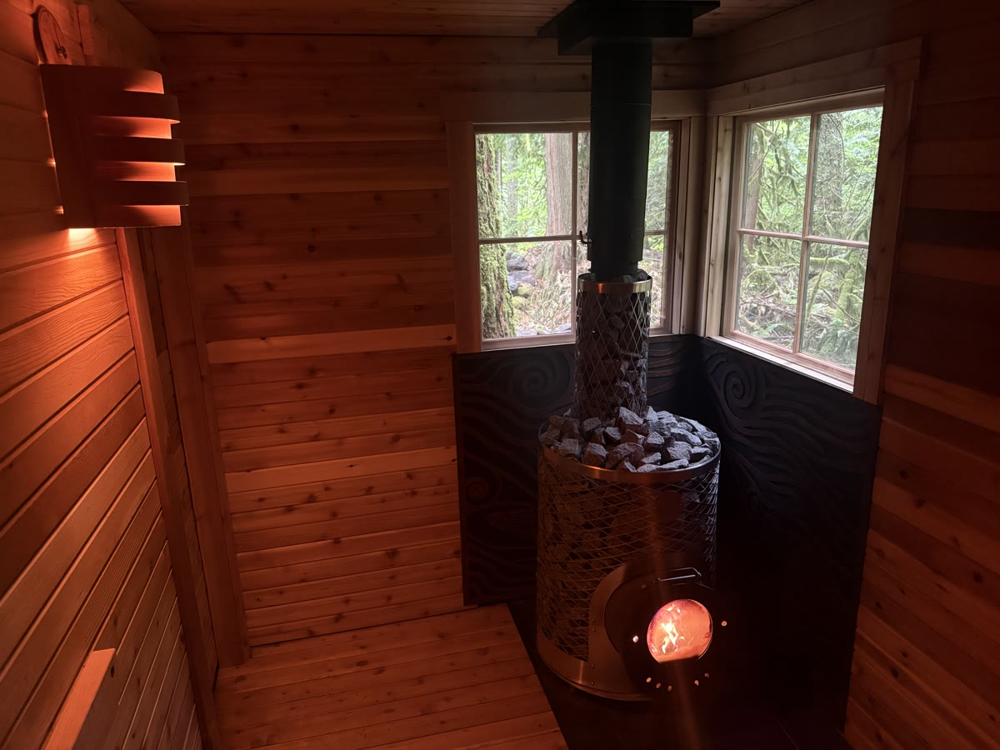
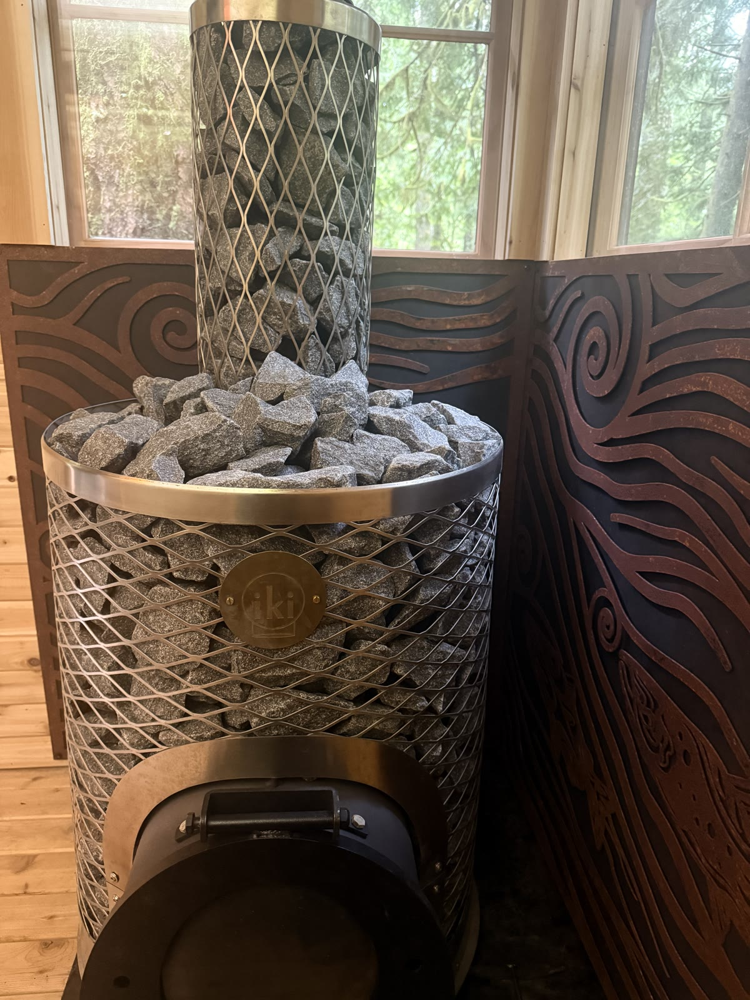
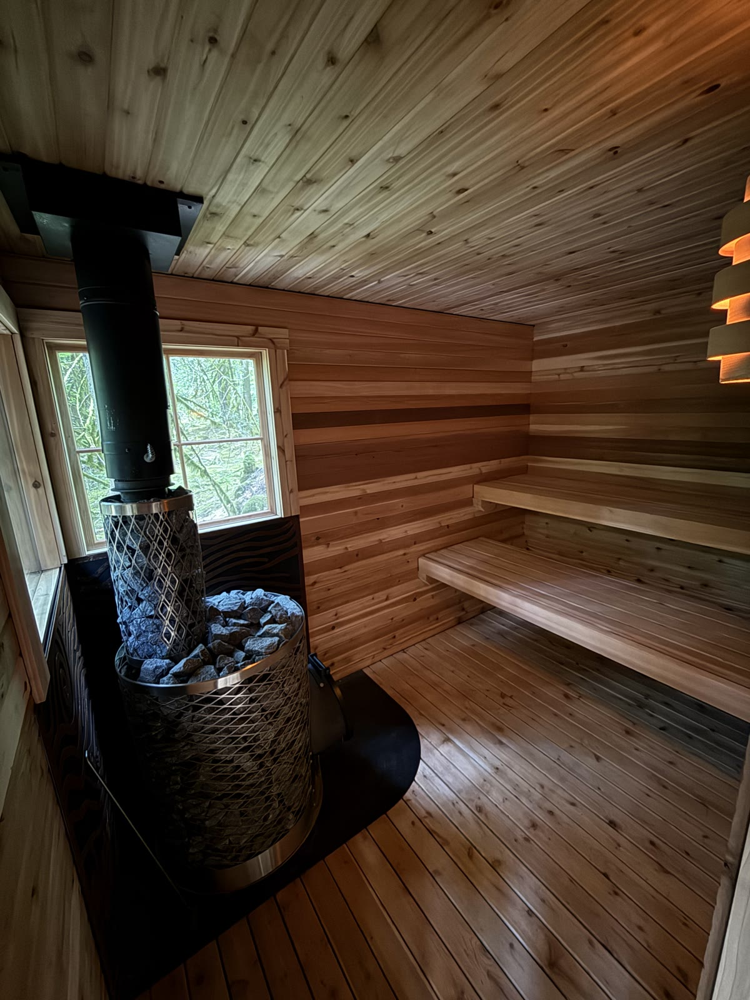
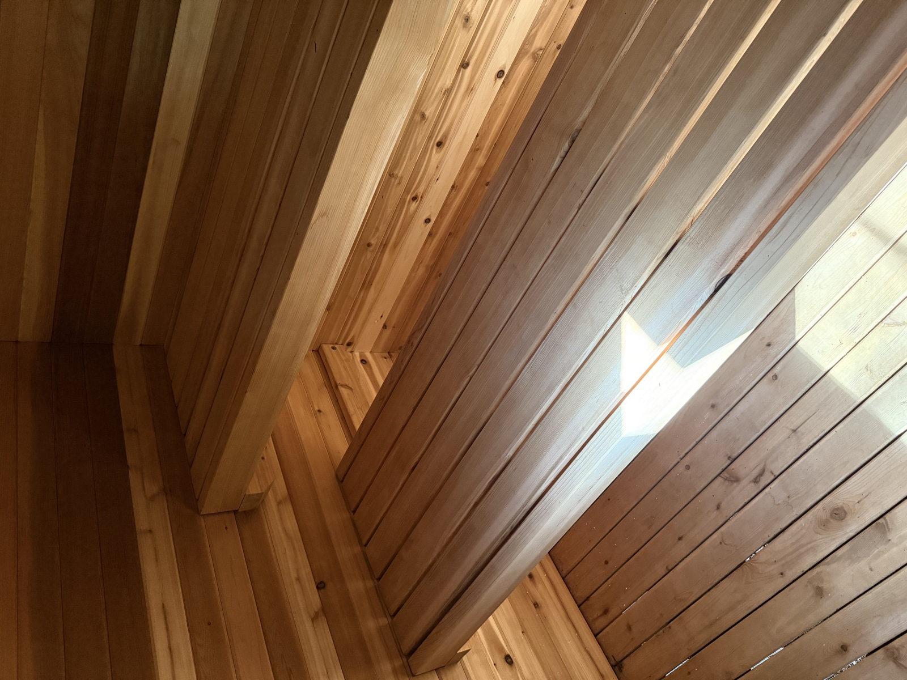
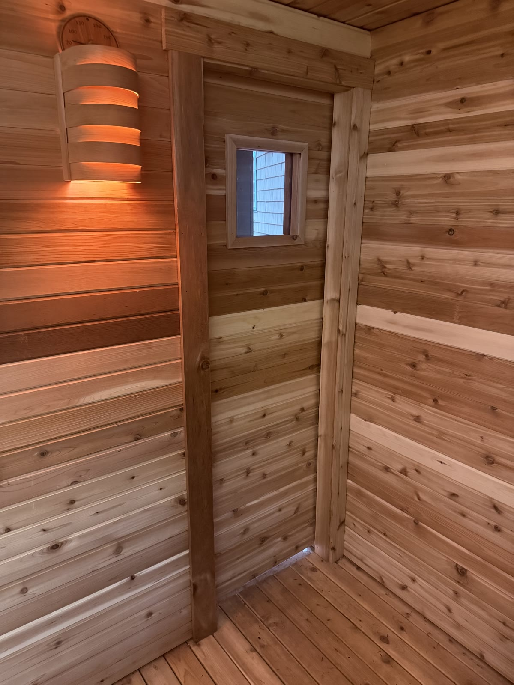
Resources
I consulted several books and other guides during this process. Below are some of the ones I found most useful.
Build guides
- Sauna Build, From Start to Finnish
- Art of Sauna Building
- Saunatimes: Bench Design
- Chimney Install Tips